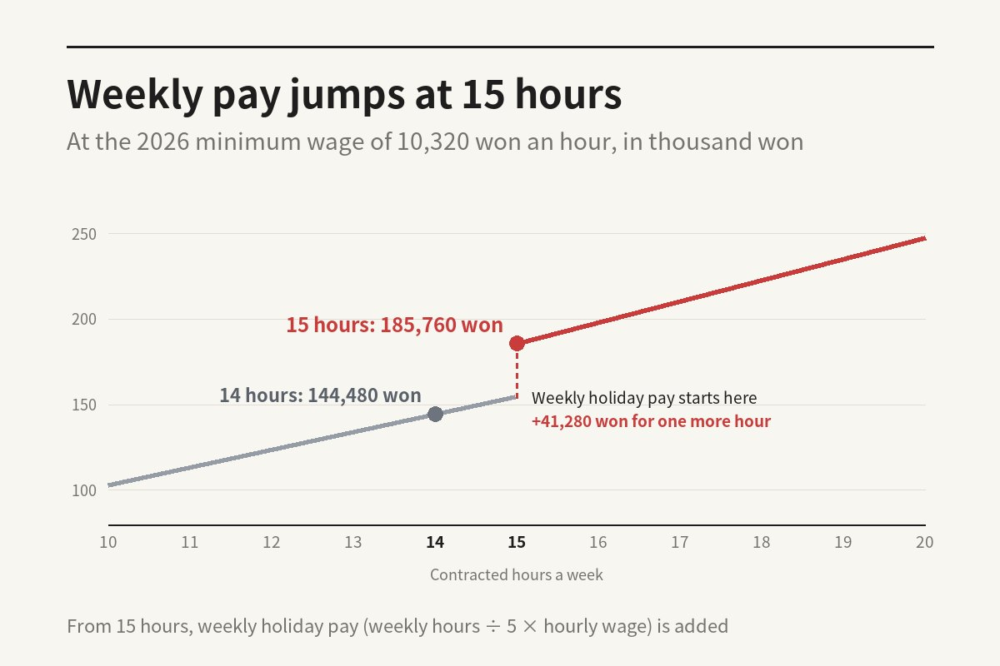

Why 15 hours a week matters so much for part-time workers in South Korea
In South Korea, a part-timer contracted for 15 hours a week gets a paid weekly rest day and, after a year, severance pay. One contracted for 14 hours gets neither. From 2027, employment insurance drops the hours test for a pay test.
Who the law covers
In October 2026, 1.819 million people in South Korea worked fewer than 15 hours a week, about six in every 100 employed, according to the monthly labor force survey, which counts hours actually worked and includes the self-employed. Ten years earlier, in October 2016, the figure was 898,000.
Korean law draws a line at those 15 hours. The Labor Standards Act, the country's main employment law, calls anyone who works shorter hours than a regular employee at the same workplace a part-time worker, and says their conditions should be set in proportion to their hours. But if contracted hoursUnder Korea's Labor Standards Act, the working hours agreed between employee and employer within the legal limits. The 15-hour line is measured on these, not on hours actually worked.Labor Standards Act, Art. 2(1)(viii) average under 15 a week over four weeks, two entitlements drop away: the paid weekly rest day and annual paid leave. The paid rest day means one extra day's wages each week on top of the hours worked, money Koreans call weekly holiday payKorean employers must give employees at least one paid rest day a week on average. The pay for that day is commonly called weekly holiday pay.Labor Standards Act, Art. 55(1)Chapter 17 Weekly holiday pay →. A separate law excludes the same people from severance pay, which in Korea is owed to anyone leaving a job after a year or more, whatever the reason, at about a month's wages for each year worked. Such workers are known as ultra-short-time workers.
The 15 hours are not hours actually worked. They are the hours agreed in the contract. If the hours vary from week to week, the average over four weeks counts, or over the whole period if the job has lasted less than four weeks.
Some protections apply whatever the hours. Short hours do not take anyone out of the minimum wage or workplace-injury insurance. The duty to hand over a written contract also stands.
The rules described here are those in force in November 2026.
How the rules changed
When the Labor Standards Act was rewritten on March 13, 1997, it contained no 15-hour figure. It said only that parts of the law need not apply to part-timers whose hours were markedly short, and left the definition to a presidential decree. The wording about a four-week average under 15 hours a week entered the Act itself in an amendment of March 21, 2008, in force from July 1 that year.
From January 1, 2019, a decree under the Minimum Wage Act has counted paid rest hours when checking whether monthly pay meets the minimum. That is why a full-time month is counted as 209 hours: 40 hours of work plus eight paid rest hours a week, times the 4.345 weeks in an average month.
On August 14, 2025, the Supreme Court settled how to calculate weekly holiday pay for people who work fewer than five days a week. It is easy to assume that two eight-hour days earn eight hours of holiday pay. Under that ruling it is less.
The biggest change is to employment insurance, which pays unemployment benefits. Today a worker contracted for under 60 hours a month, or under 15 a week, is not covered, unless they work at the same place for three months or more or are a day laborer. An amendment promulgated on March 17, 2026, replaces the hours test with a pay test from January 1, 2027. A draft decree the Ministry of Employment and Labor published on July 10, 2026, sets the line at 800,000 won a month, about $600. At the 2027 minimum wage of 10,700 won an hour, 14 hours a week comes to about 650,000 won a month, short of that line at a single job, though anyone who stays three months or more is covered as now. The amended law also lets someone below the line at each job apply to join if pay from several workplaces together clears it; under the draft, that combined line would be 800,000 won too.
One hour, four hours' pay

A single hour changes a lot. The 2026 minimum wage is 10,320 won an hour, about $7.75 at 1,331 won to the dollar. A contract for 14 hours a week pays 144,480 won, about $109. A contract for 15 hours pays 154,800 won for the work plus 30,960 won in weekly holiday pay, or 185,760 won, about $140.
For the employer, the 15th hour costs 41,280 won, four times the hourly wage. After a year, severance pay is owed as well, and a business with five or more staff must also grant annual leave.
So an employer can hire two people for 14 hours each in place of one person for 28, an arrangement known as split contracts. A worker can put in 28 hours a week across two jobs and still get no holiday pay or severance from either, because each workplace is assessed separately.
Most people working such short hours are women. Of the 1.819 million people who worked under 15 hours a week in October 2026, 1.224 million, or 67%, were women. As noted, the survey counts hours actually worked, so it is not a count of ultra-short-time workers as the law defines them.
Where views differ
Should the 15-hour line stay? There are two camps.
One says it is needed. Very short jobs are mostly temporary, the argument runs, and holiday pay and severance reward steady service to one workplace. Requiring them for every worker would raise employers' costs and could make jobs worse.
The other says the line should go and the entitlements be paid in proportion to hours. That way an employer's cost rises only in step with the hours. This side also points out that contracted hours are in practice set by the employer, so a test based on them cannot stop split contracts.
The system itself now points two ways. Employment insurance drops the hours line in 2027 for a pay test, while the 15-hour line for the weekly rest day, annual leave and severance stays where it is.
What the courts decided
The two views met at the Constitutional Court, which rules on whether laws are constitutional. On November 25, 2021, it upheld the provision that excludes ultra-short-time workers from severance pay. Such work is generally temporary, the majority said, and does not fit a scheme premised on contribution to a workplace. Three justices dissented, arguing that severance is deferred wages and could simply be paid in proportion to hours.
What counts toward the 15 hours came before the Supreme Court, the top court for ordinary cases, on July 11, 2024. Part-time lecturers at a national university, each teaching 12 hours a week or less, had sued for weekly holiday pay and pay for unused annual leave. The appeals court treated the teaching hours in the contract as the contracted hours, and said the total stayed under 15 even with preparation time. The Supreme Court overturned that and sent the case back. Preparing classes, advising students, and setting and marking exams come with the job, it said, and that time has to be counted. Three times the teaching hours, the court added, can serve as a rough guide.
How many hours of holiday pay are owed was settled on August 14, 2025, in a case brought by taxi drivers working alternate days. For anyone working fewer than five days a week, the court said, the week should be treated as five working days unless the parties have agreed otherwise, and holiday pay should cover weekly contracted hours divided by five. Paying a full day's hours would give someone who works two days the same holiday pay as someone who works five, the court reasoned. Case law can change.
Where that leaves us
Start with the contracted hours written in the employment contract. If they average 15 or more a week over four weeks, and the worker turned up on every scheduled day that week, weekly holiday pay is owed. That holds even at businesses with four or fewer staff. Annual leave applies only where there are five or more.
Anyone contracted for 15 hours or more who stays a year or more is also owed severance, whatever the size of the business.
If the contract and the reality differ, the contract is not the last word. As in the 2024 ruling, courts ask how much time the job ordinarily takes. Rosters and clock-in records can serve as evidence, as can messages giving instructions.
Social insurance has its own tests. Enrollment in the national pension and health insurance through an employer generally turns on 60 contracted hours a month. Employment insurance uses the same hours line through 2026 and switches to pay in 2027. Either way, day laborers and anyone who works at the same place for three months or more are covered even below the line.
Unpaid weekly holiday pay counts as wages, and the right to claim it lapses after three years. It can be pursued through a complaint to a regional labor office or in court.
Do the math
Weekly holiday pay is weekly contracted hours divided by five, times the hourly wage. The formula fits anyone contracted for 15 to 40 hours over five days or fewer a week; at 40 hours it comes to eight hours' pay.
Take someone on 10,320 won an hour working five hours a day, five days a week, 25 hours in all. Holiday pay is five hours' worth, 51,600 won. Added to 258,000 won for the work, the week pays 309,600 won, about $233.
Take someone working two eight-hour days, 16 hours a week. Holiday pay is 16 divided by 5, or 3.2 hours' worth: 33,024 won, about $25.
The 2027 minimum wage is 10,700 won an hour. At 15 hours a week, holiday pay will be 32,100 won. Try your own hours and wage in the calculator below.
Estimate your weekly holiday pay
Weekly holiday paywon
For employees contracted for 15 to 40 hours over five days or fewer a week who worked every scheduled day that week. Below 15 hours no weekly holiday pay is owed. This is a rough guide; for an exact figure, ask the labor ministry's call center (1350 in Korea).
If you run a business
You must hand over a written contract stating pay and contracted hours. Failing to do so can bring a fine of up to 5 million won, about $3,760. A business with five or more staff that hires a part-timer must also put the working days and the hours for each day in writing, or face an administrative penalty of up to 5 million won.
Not giving a paid weekly rest day to someone contracted for 15 hours or more is punishable by up to two years in prison or a fine of up to 20 million won, about $15,000.
At a business with five or more staff, a part-timer can be asked to work beyond the contracted hours only with their consent, and by no more than 12 hours a week. Those extra hours must be paid at a premium of at least 50% of the ordinary wage. Imposing them without consent can bring a fine of up to 10 million won, about $7,500.
From January 1, 2027, employment insurance moves to a pay test. Under the draft decree, the once-a-year report of total pay would be abolished, and monthly pay would have to be reported by the end of the month after it is paid.
Next chapterChapter 3 Fixed-term workers →
Sources
- 국가법령정보센터, 근로기준법 (2026. 10. 8. 시행) (opens in new tab)
- 국가법령정보센터, 근로기준법 시행령 (2025. 10. 23. 시행) (opens in new tab)
- 국가법령정보센터, 근로자퇴직급여 보장법 (2026. 9. 18. 시행) (opens in new tab)
- 국가법령정보센터, 고용보험법 (2026. 9. 18. 시행, 법률 제21473호 부칙) (opens in new tab)
- 국가법령정보센터, 고용보험법 시행령 (2026. 9. 18. 시행) (opens in new tab)
- 국가법령정보센터, 기간제 및 단시간근로자 보호 등에 관한 법률 (2021. 5. 18. 시행) (opens in new tab)
- 국가법령정보센터, 최저임금법 시행령 (2019. 1. 1. 시행) (opens in new tab)
- 국가법령정보센터, 최저임금법 (2020. 5. 26. 시행) (opens in new tab)
- 국가법령정보센터, 산업재해보상보험법 (2026. 7. 1. 시행) (opens in new tab)
- 국가법령정보센터, 근로기준법 (1997. 3. 13. 제정, 법률 제5309호) (opens in new tab)
- 국가법령정보센터, 국민연금법 시행령 (2026. 1. 1. 시행) (opens in new tab)
- 국가법령정보센터, 국민건강보험법 시행령 (2026. 10. 1. 시행) (opens in new tab)
- 대법원 2024. 7. 11. 선고 2023다217312 판결 (opens in new tab)
- 대법원 2025. 8. 14. 선고 2022다291153 판결 (opens in new tab)
- 헌법재판소 2021. 11. 25. 선고 2015헌바334 결정 (opens in new tab)
- 국가데이터처 국가통계포털, 경제활동인구조사 취업시간별 취업자 (opens in new tab)
- 국가데이터처 국가통계포털, 경제활동인구조사 성/취업시간별 취업자 (opens in new tab)
- 고용노동부 보도자료, 모든 일하는 사람을 위한 고용보험의 첫걸음, 소득기반 고용보험으로 시작한다 (2026.7.10) (opens in new tab)
- 고용노동부 고시 제2025-47호, 2026년 적용 최저임금 고시 (opens in new tab)
- 고용노동부 고시 제2026-60호, 2027년 적용 최저임금 고시 (opens in new tab)